AI는 잘 만들지만, 원리를 모르면 못 고쳐요
AI(Artificial Intelligence)에게 공 튕기는 게임을 시키면 금방 만들어 와요. 문제는 그다음이에요. 같은 코드를 친구의 144Hz 모니터에서 켜면 공이 두 배 넘게 빨라져요. AI는 사용자의 모니터까지 챙기지 않아요.
영상 첫 화면이 이 상황을 보여 줘요. 왼쪽이 내 컴퓨터(60Hz), 오른쪽이 친구 컴퓨터(144Hz)예요. 오른쪽 아래 빨간 딱지에 '2.4배 빠름'이라고 적혀 있어요.
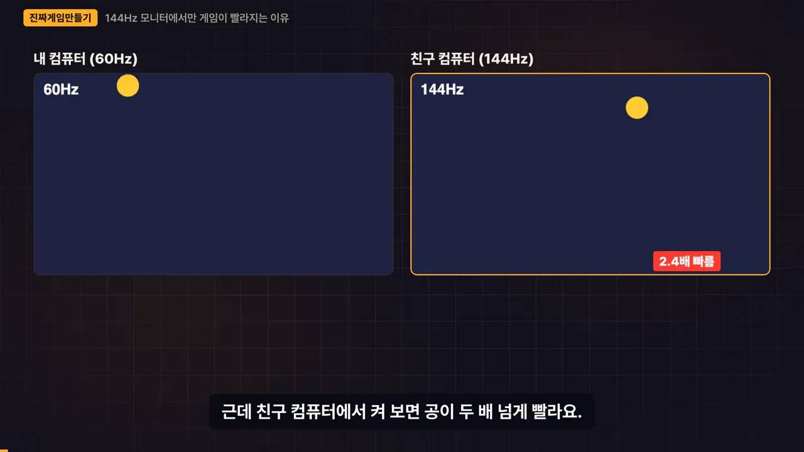
영상은 이걸 원리를 모르는 문제로 봐요. AI가 공을 어떤 원리로 움직이는지 모르면 무엇을 고쳐 달라고 할지도 몰라요. 처음엔 그럴듯해 보여도 모니터 하나 바뀌면 게임이 무너지고요. 영상은 이 상태를 '운전은 할 줄 아는데 목적지를 모르는 것'에 빗대요.
오늘 끝에 AI에게 보낼 문장
영상은 결과물부터 보여 줘요. 왼쪽 상자가 AI에게 보낼 지시문이고, 오른쪽 빨간 딱지 세 개가 처음 보면 암호 같은 부분이에요. 암호 1은 dt, 암호 2는 0.033, 암호 3은 부호 뒤집기예요.
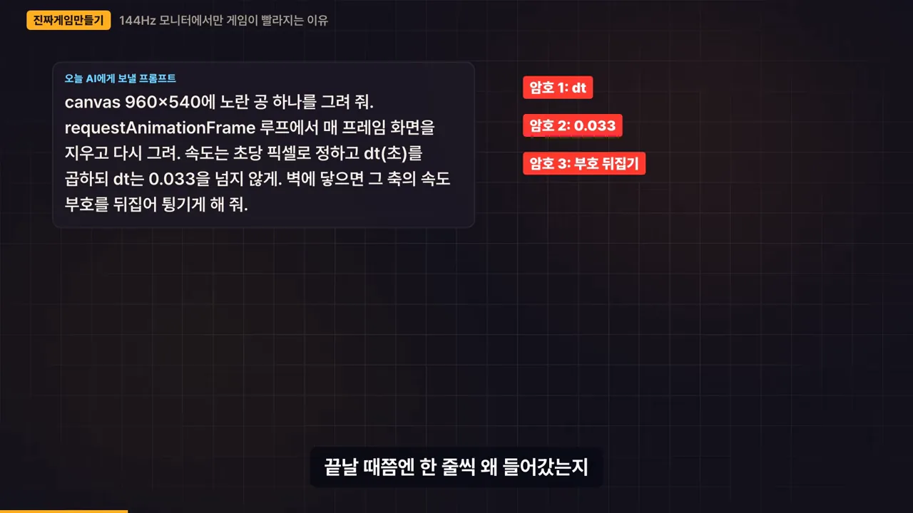
화면에 나온 지시문은 이래요.
canvas 960×540에 노란 공 하나를 그려 줘. requestAnimationFrame 루프에서 매 프레임 화면을
지우고 다시 그려. 속도는 초당 픽셀로 정하고 dt(초)를 곱하되 dt는 0.033을 넘지 않게.
벽에 닿으면 그 축의 속도 부호를 뒤집어 튕기게 해 줘.게임 루프: 지우고, 옮기고, 다시 그리기
게임 화면은 교과서 귀퉁이에 그리는 플립북과 같아요. 한 장 그리고, 지우고, 조금 옮겨서 또 그려요. 1초에 60장을 넘기면 한 장이 0.016초밖에 안 돼서 눈에는 끊긴 그림이 아니라 이어진 움직임으로 보여요.
아래 화면 오른쪽 위 딱지가 숫자를 정리해 줘요. 한 장이 1프레임, 한 장이 0.016초, 60Hz는 1초에 60장이에요. 왼쪽 아래 노란 딱지에는 '지우고 → 옮기고 → 그리기 = 게임 루프'라고 적혀 있어요.
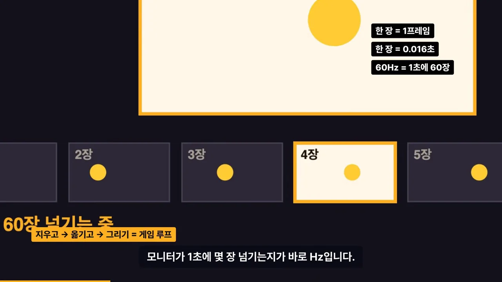
공을 그리고 한 장씩 넘기기
코드로는 세 단계예요. canvas 태그(960×540)가 도화지이고, arc로 노란 원을 그리면 그림이 나와요. 이제 loop 함수 안에서 x를 4씩 늘리고 다시 그려요. 아래 화면에서 노란 줄로 강조된 마지막 줄의 requestAnimationFrame이 브라우저에게 다음 장을 넘겨 달라고 부탁하는 함수예요.
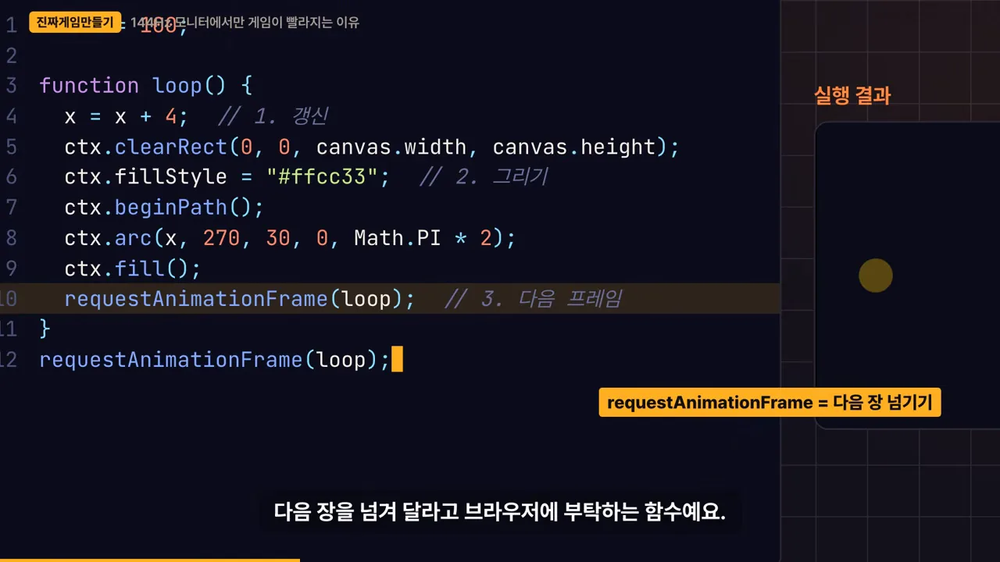
한 장에 4픽셀이 작아 보여도 60Hz면 1초에 240픽셀이에요. 960픽셀 화면의 4분의 1이죠. 이 코드에는 멈추는 장치가 없어서 공은 그대로 화면 밖으로 나가요.
AI가 가끔 빼먹는 한 줄
화면을 지우는 clearRect를 주석 처리하면 어떻게 될까요. 아래 화면 왼쪽 코드에서 빨간 줄이 그 줄이고, 오른쪽 실행 결과에는 공 대신 노란 띠가 생겼어요.
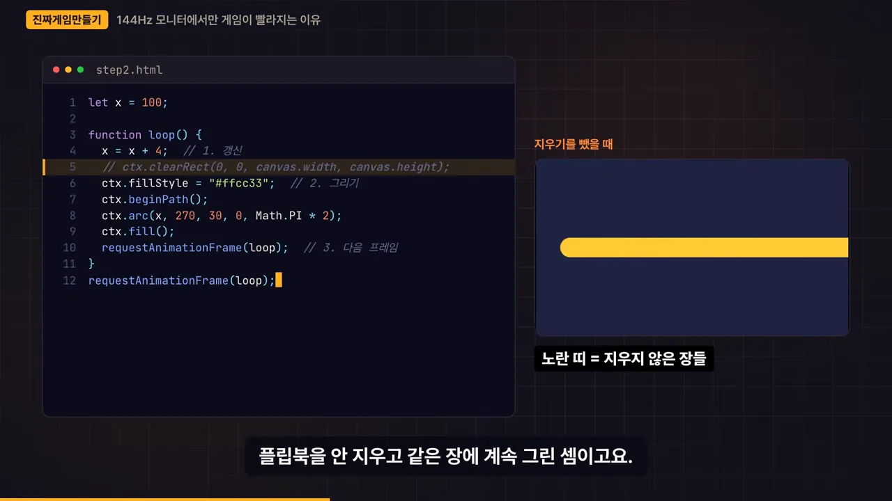
dt: 장 수 말고 시간을 세요
코드는 똑같은데 친구 모니터에서만 공이 빠른 이유는 간단해요. 지금 코드는 '한 장 넘길 때마다 4픽셀'씩 옮겨요. 모니터가 1초에 넘기는 장 수가 다르면 1초에 가는 거리도 달라져요.
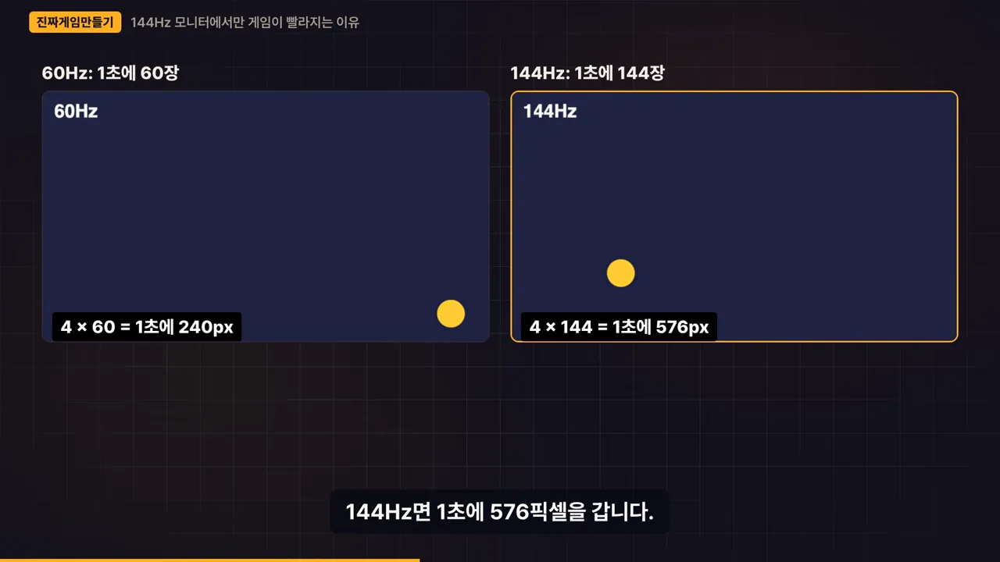
장 수 말고 시간을 세요
requestAnimationFrame은 다음 장을 부를 때 지금 시각을 함께 넘겨줘요. 여기서 지난 장의 시각을 빼면 그 사이 흐른 시간이 나와요. 이게 델타 타임, 줄여서 dt예요. 아래 코드 6번째 줄이 dt를 구하는 곳이고, 8번째 줄 x = x + speed * dt가 공을 옮기는 곳이에요.
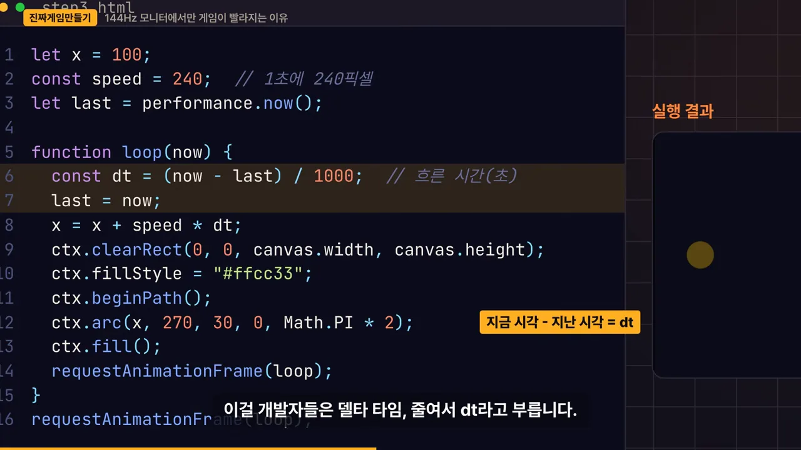
속도를 '1초에 240픽셀'로 정하고 dt를 곱하면 끝이에요. 모니터가 몇 장을 넘기든 공은 이제 시계만 봐요. 영상이 보여 준 계산을 표로 옮기면 이래요.
| 모니터 | dt 없이 (한 장에 4px) | dt 곱하면 한 장 이동 | dt 곱하면 1초 뒤 |
|---|---|---|---|
| 60Hz | 4 × 60 = 1초에 240px | 0.016초 × 240 = 4px | 240px |
| 144Hz | 4 × 144 = 1초에 576px | 0.007초 × 240 = 1.7px | 240px |
아래 화면의 세 칸이 같은 이야기예요. 144Hz는 장을 더 많이 넘기지만 한 장에 조금씩 가니까 1초 뒤에는 둘 다 240픽셀에 도착해요. 왼쪽 아래 딱지는 'dt는 초 단위'라고 적었어요.
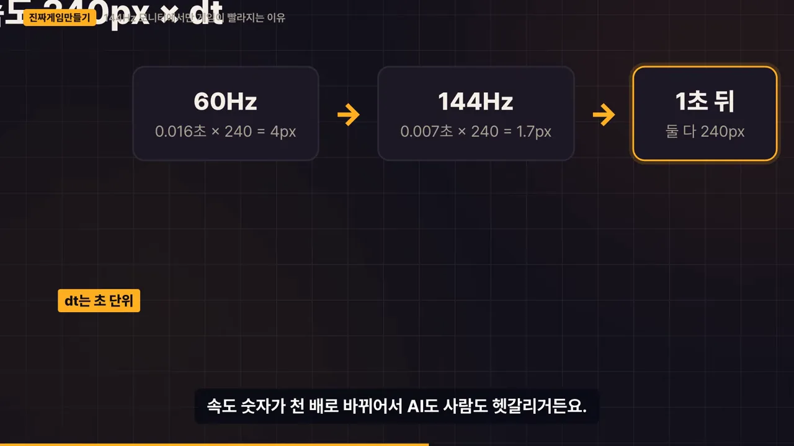
나란히 켜 보면 이번엔 도착하는 시간이 같아요. 144Hz 쪽은 대신 더 부드럽게 움직이고요. 원리가 귀찮으면 '속도에 dt를 곱한다'만 기억해도 돼요.
- dt를 끈 채 60Hz와 144Hz를 오가 보세요. 1초 거리가 240px에서 576px로 바뀌어요.
- dt를 켜고 다시 오가 보세요. 한 장 이동은 4px과 1.7px로 달라도 1초 거리는 240px로 같아요.
- dt를 켠 채 탭 비운 시간을 10초로, 상한을 꺼 보세요. 복귀 첫 장에 2,400px을 가서 화면 밖으로 나가요(다음 섹션).
큰 게임도 한 실수
영상은 다크 소울 2 PC(Personal Computer)판을 예로 들어요. 60프레임으로 돌리면 무기가 30프레임일 때보다 훨씬 빨리 부서졌대요. 무기가 닳는 계산이 시간 대신 프레임 수에 묶여 있었기 때문이에요. 아래 화면 위쪽에는 '60fps = 무기가 훨씬 빨리 닳음'과 '2014.04 출시 → 2015.04 패치'가 적혀 있어요.
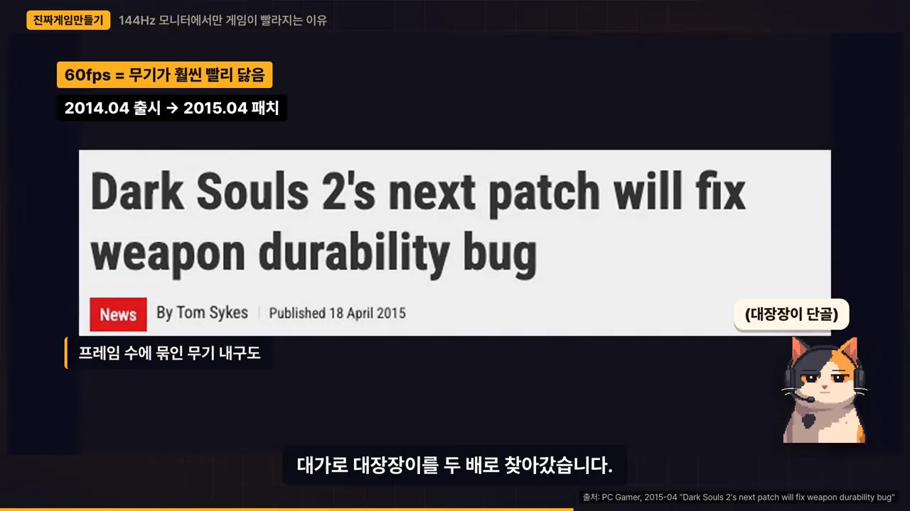
벽 튕기기와 dt 상한
마지막으로 벽에 튕겨 볼 차례예요. 답은 생각보다 단순해요. 벽을 넘은 쪽 속도의 부호만 뒤집어요. 좌우 벽이면 vx를, 위아래 벽이면 vy를 뒤집어요.
아래 완성 코드에서 공은 { x: 100, y: 270, vx: 300, vy: 200, r: 30 } 객체예요. 속도가 두 축으로 나뉘어서, 앞에서 본 240px/초 대신 가로 300, 세로 200을 써요. 강조된 9–10번째 줄이 좌우 벽 검사이고, 12–13번째 줄이 위아래 벽 검사예요.
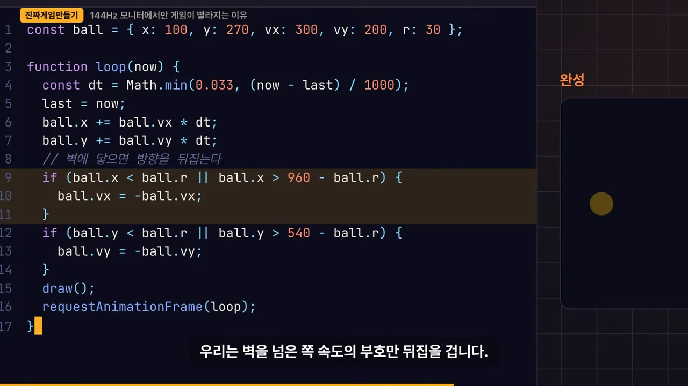
r까지 따져서 공 가장자리가 벽에 닿을 때 뒤집어요. 영상 04:20에서 보기dt에 상한을 두는 이유
2번째 줄에서 dt를 Math.min(0.033, …)으로 감쌌어요. 이 상한을 빼면 생기는 일을 영상이 보여 줘요. 탭을 10초 비웠다 돌아오면 dt가 한 번에 10초로 들어와요. 아래 화면처럼 공은 한 장 만에 240 × 10 = 2,400픽셀을 가서 화면 밖으로 나가요.
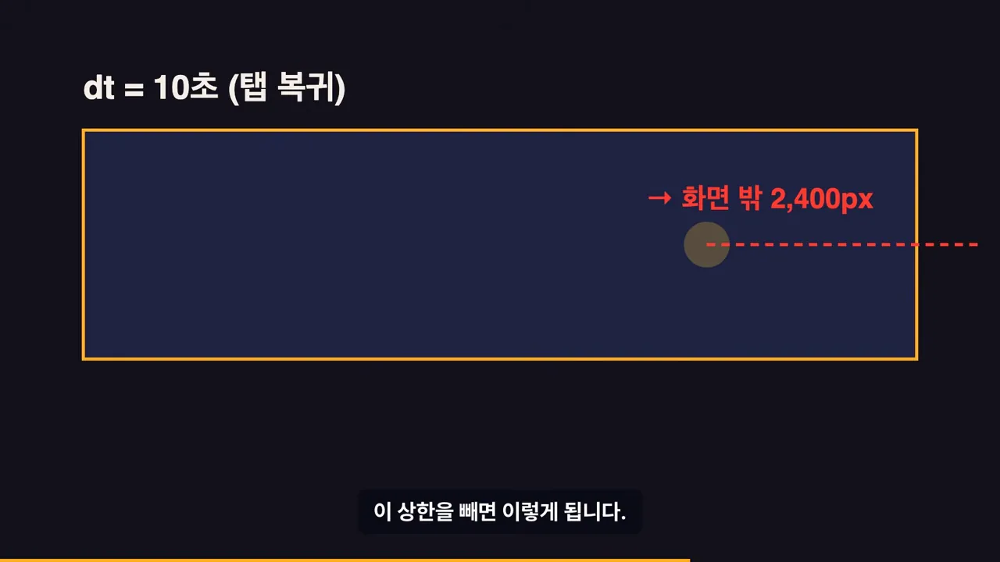
그래서 0.033초에서 잘라요. 아래 슬라이드가 이유 세 가지를 정리해요.
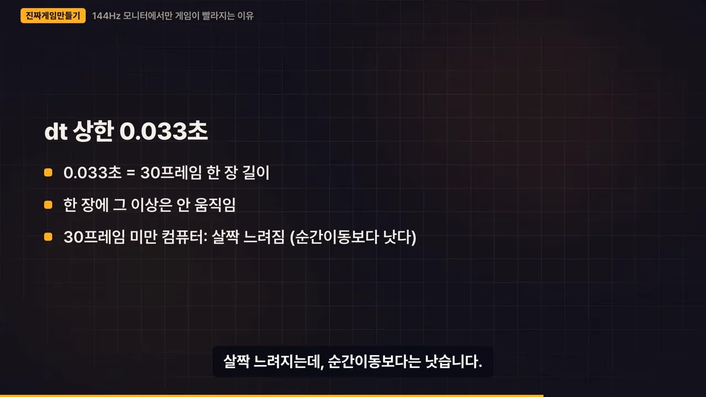
dt는 어디에 쓰나요
움직이거나 시간에 따라 변하는 건 전부예요. 캐릭터 이동, 총알, 쿨타임, 시간 따라 차오르는 게이지까지요. 다만 아무 데나 곱하면 안 돼요. 쿨타임에서 dt를 빼는 줄에 dt를 한 번 더 곱하면, 한 장에 0.016의 제곱만큼만 줄어서 쿨타임이 사실상 끝나지 않아요.
영상 제작자의 미니게임 모음 코드에도 같은 줄이 있어요. 아래 화면의 빨간 줄은 Math.min(33, now - lastTime)이에요. 처음에 밀리초로 짜서 33으로 잘랐고, 오른쪽 위 딱지가 '33ms = 0.033초'라고 짚어 줘요.
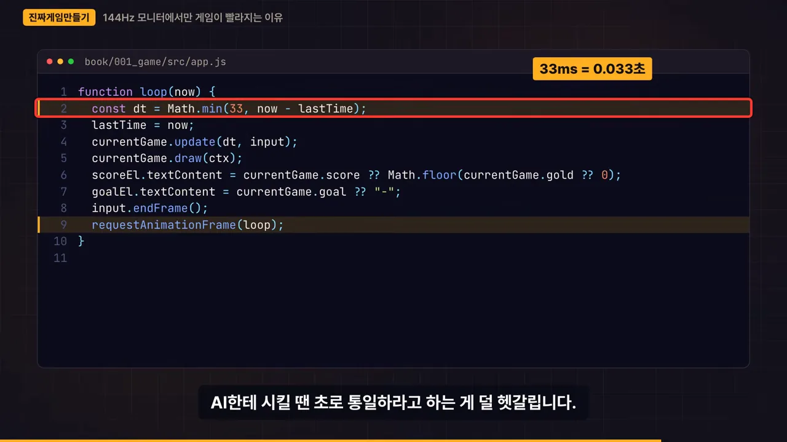
처음 본 지시문, 이제 읽혀요
이제 처음 본 지시문을 다시 읽어요. 아래 화면 왼쪽이 그 지시문이고, 오른쪽 '왜 이렇게 시킬까' 상자가 한 줄씩 이유를 달아 줘요. 그 아래 '알아야 하는 것'에는 게임 루프, dt, 속도 벡터 세 개가 있어요.
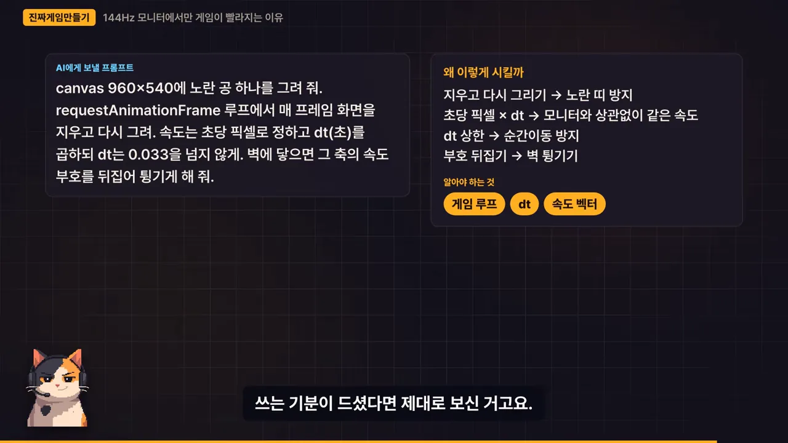
| 지시문 속 표현 | 막는 문제 | 다룬 곳 |
|---|---|---|
| 매 프레임 지우고 다시 그려 | 노란 띠 | 게임 루프 |
| 초당 픽셀에 dt(초)를 곱해 | 친구 모니터에서만 빠른 공 | dt |
| dt는 0.033을 넘지 않게 | 탭 다녀온 뒤 순간이동 | dt 상한 |
| 그 축의 속도 부호를 뒤집어 | 벽을 뚫고 나가는 공 | 벽 튕기기 |
영상은 이 작업을 '눈치 없는 신입에게 업무 지시서를 쓰는 일'에 빗대요. 원리를 알면 무엇을 적어야 할지 보여요.
숙제는 AI에게 공을 두 개로 늘려 달라고 시켜 보는 거예요. 조건으로 ball을 배열에 담으라고 붙여요. 속도에 dt만 곱해 두면 모니터와 상관없이 같은 게임이 돼요.